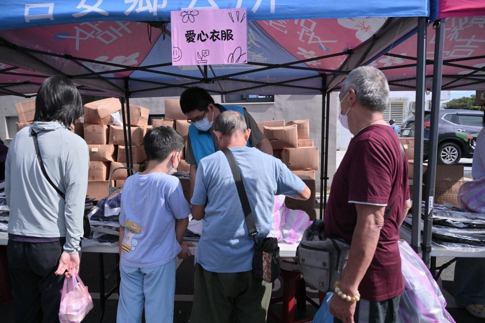

寒冬前夕送暖！吉安鄉號召十方善意 游淑貞親送千戶身障物資與冬衣

可樂電子報小編/編輯
天氣逐漸轉涼，花蓮吉安鄉公所前廣場在17日上午湧現陣陣暖流。為了讓鄉內弱勢家庭在寒冬來臨前做好準備，吉安鄉公所透過愛心物資捐贈平台，經團隊細心整理與分裝，一口氣整備出1,000份生活物資與防寒衣物。這場專為身心障礙弱勢家庭舉辦的物資發放活動，將滿滿的關心精準送達1,000戶受惠家庭手中，協助鄉親安心抗寒。現場不僅有精細的分流指引，公所團隊更主動上前協助行動不便的鄉民將沉甸甸的物資搬運上車，溫馨的互動讓現場洋溢著熱絡氛圍。

吉安鄉長游淑貞表示，鄉公所長期扮演民間善意與基層需求的對接橋樑，每年持續串聯熱心社團、宮廟及慈善力量，讓愛心平台發揮最大效益。本次特別針對身障家庭延伸需求，加碼準備保暖衣物，這份跨界善舉特別感謝龍岩福德宮文化發展協會、花蓮聖天宮、花蓮仁裡萬善廟、北玄宮、玄慧堂、花蓮聖玄宮、九天紫元宮、台中豐龍聖道堂、財團法人臺中市私立蘇玉枝社會福利慈善事業基金會以及花蓮噶舉蓮花菩提苑等10家宮廟與團體齊心挹注，加上中華民國紅十字會及時捐贈冬季保暖衣物，共同織就一張緊密的社會安全照顧網。

為避免民眾現場久候，公所團隊採取預先通知、分區分流的彈性發放機制，大幅提升領取效率。活動當天除了物資發放與冬衣挑選區外，公所更整合多方資源，設置健保快易通宣導、高齡者防災避難知識說明，並邀請國軍人才招募中心花蓮招募站到場進行多元職涯互動宣導，讓鄉親在領取物資的同時也能獲得實用生活資訊與就業選擇。吉安鄉公所強調，每一份物資都是社會關懷的縮影，未來將持續深化民間資源鏈結，拋磚引玉吸引更多善意投入，打造有愛宜居的吉安鄉。

📸 更多現場紀實影像


▶ 延伸觀看
📺 相關報導影片：點此於 YouTube 觀看完整報導